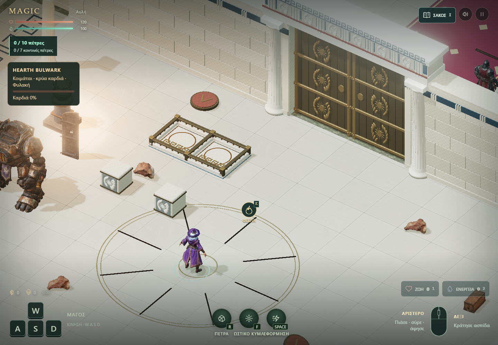

MAGIC / ΔΟΚΙΜΑΣΤΙΚΟ ΠΕΡΙΒΑΛΛΟΝ / 14.10.2026Ελληνικό ιερό.
Πύλες που χρειάζονται λύση.
Δωρικές κολόνες, οριζόντια επιστύλια, μαίανδροι και χάλκινα ανάγλυφα. Οι πόρτες ενώνονται με συνεχείς τοίχους και έχουν πραγματική σύγκρουση σε όλο το κλειστό πέρασμα.
Πρώτο λειτουργικό δείγμα: δίφυλλη πύλη με ενιαία διπλή βάση, μονή secret πόρτα, ξύλινη πύλη για το HEARTH και ανοιχτές διαδρομές. Η συνολική μεταμόρφωση του κάστρου και η τελική κατανομή των puzzles παραμένουν επόμενη φάση.
Πριν / μετά στο παιχνίδι

Πριν: δύο χωριστές πλάκες. Μετά: μία κοινή βάση με δύο περιφραγμένες θέσεις. Πραγματικές λήψεις 1440 × 1000, ίδια κάμερα, φωτισμός και θέσεις μάγου/HEARTH. Οι θέσεις των βαρών άλλαξαν μαζί με τη βάση· η ένδειξη του τυχαίου δωματίου του HEARTH διαφέρει.
Δύο βάρη, μία ενιαία βάση
Η μεγάλη χάλκινη πύλη βρίσκεται στο βόρειο άκρο της αυλής. Μία κοινή πέτρινη βάση έχει δύο θέσεις βάρους, χαμηλό περιμετρικό φράγμα και μεσαίο διαχωριστικό. Το φράγμα συγκρατεί τα βάρη όταν κυλούν. Πιάσε κάθε σκαλιστό βάρος και σύρε το πάνω από μία θέση. Η τηλεκίνηση το ισιώνει και το χαμηλώνει· άφησέ το να ακουμπήσει. Όταν πατηθούν και οι δύο πλάκες, ανοίγουν και τα δύο φύλλα.
Τα βάρη δεν σπάνε, δεν καίγονται και δεν καταναλώνονται από τον Goliath. Αν χαθούν εκτός κόσμου ή πίσω από το κλειστό πέρασμα, επιστρέφουν. Η λυμένη πύλη μένει ανοιχτή για το τρέχον παιχνίδι.
Φλόγα και κρυφό πέρασμα
Η ξύλινη πύλη βρίσκεται ανάμεσα στην αίθουσα και την κρύπτη. Χρειάζεται τα φλογοβόλα του HEARTH: το ξύλο μαυρίζει και καταστρέφεται. Η φωτιά του μάγου δεν την ανοίγει.
Στη δυτική πλευρά της βιβλιοθήκης, μία μονή βάση με το ίδιο χαμηλό φράγμα ανοίγει μία secret πόρτα. Το πέρασμα αυλής–φρουραρχείου παραμένει ανοιχτό. Οι εναλλακτικές διαδρομές προς το τυχαίο HEARTH παραμένουν προσβάσιμες.
 Το puzzle λύθηκε με πραγματικά συμβάντα ποντικιού. Η ίδια ακολουθία ελέγχθηκε με αφή σε viewport 390 × 844.
Το puzzle λύθηκε με πραγματικά συμβάντα ποντικιού. Η ίδια ακολουθία ελέγχθηκε με αφή σε viewport 390 × 844.
 Ανοιχτό πέρασμα μετά το κάψιμο της ξύλινης πόρτας. Η στολή πέρασε, ο μάγος κατέβηκε και επιβιβάστηκε ξανά.
Ανοιχτό πέρασμα μετά το κάψιμο της ξύλινης πόρτας. Η στολή πέρασε, ο μάγος κατέβηκε και επιβιβάστηκε ξανά.
Έλεγχοι και όρια
- 200 unit tests και έλεγχος ενσωμάτωσης φυσικής.
- 10 έλεγχοι μηχανισμών, 24 δοκιμές συγκράτησης με κύλιση σε οκτώ κατευθύνσεις ανά θέση και πλήρης λύση της διπλής και της μονής βάσης με ποντίκι και αφή.
- Έλεγχος διαδρομών σε 731 υποψήφια σημεία των 13 δωματίων εμφάνισης του HEARTH, με κλειστή την ξύλινη πύλη.
| RTX 5080 / Chrome | Χωριστές πλάκες | Ενιαία βάση + φράγματα |
|---|
| Desktop καρέ, p95 | 18,5 ms | 18,6 ms |
| Update + render CPU, p95 | 6,0 ms | 6,0 ms |
| Draw calls | 523 | 533 |
| Τρίγωνα | 1.870.023 | 1.884.711 |
| Viewport αφής, p95 καρέ | 18,6 ms | 18,5 ms |
180 δείγματα μετά από 45 καρέ προθέρμανσης, ίδιο σημείο και ελεγχόμενη προσομοίωση. Τα δύο νέα φράγματα προσθέτουν 10 draw calls στη συγκεκριμένη όψη. Οι μετρήσεις αφής έγιναν στον ίδιο υπολογιστή και δεν αποδεικνύουν απόδοση φυσικού κινητού. Η πρώτη φόρτωση περιλαμβάνει μεγάλα μοντέλα. Χωριστή αποθήκευση από το κύριο παιχνίδι.